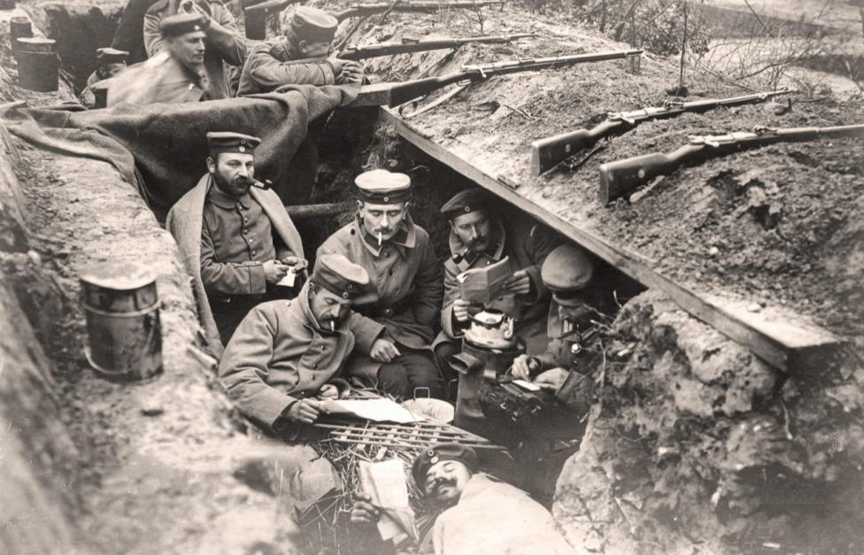
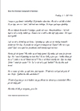
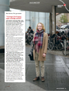
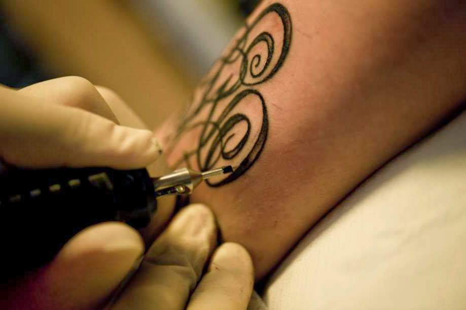
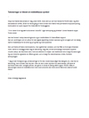

FP9 Dansk, skriftlig fremstilling
Du skal vælge en af disse opgaver:
1 Brev til slagmarken
2 Det drømmer jeg om i 2019
3 Tatoveringer
4 YouTube for forældre
Du skal skrive den valgte opgaves nummer og titel på din besvarelse.
1 Brev til slagmarken
2 Det drømmer jeg om i 2019
3 Tatoveringer
4 YouTube for forældre
Du skal skrive den valgte opgaves nummer og titel på din besvarelse.
Før du skriver
Til eleven
Til denne prøve i skriftlig fremstilling har du adgang til internettet.
Du må ikke kommunikere eller dele dine dokumenter med andre under prøven.
Nogle af opgaverne kræver, at du skal søge informationer på internettet til brug for din besvarelse. I andre opgaver er det en åben mulighed at søge fakta og inspiration.
Layoutet af din besvarelse indgår i vurderingen. Tænk derfor på, at du udover tekst kan inddrage fx billeder og andre grafiske virkemidler.
Hvis du i din besvarelse anvender informationer, citater, billeder eller andre grafiske virkemidler hentet fra internettet, skal du til sidst i besvarelsen angive de væsentlige kilder.
Din besvarelse vurderes på både indhold, sprog og form. Se vurderingskriterierne nedenfor.
God arbejdslyst!
Vurderingskriterier til eleven
Din skriftlige besvarelse bliver vurderet ud fra en helhedsvurdering af 3 dimensioner: indhold, sprog og form.
Der gives én karakter.
| Vurderingens 3 dimensioner | Vurderingskriterier | Forklaring |
| Tekstens indhold | Opgavens krav | I hvor høj grad opfylder din besvarelse de krav, der er stillet i opgaven? |
| Anvendelse af genre | I hvor høj grad viser din besvarelse sikkerhed i at skrive i genren? | |
| Disponering | I hvor høj grad er din besvarelse hensigtsmæssigt disponeret, så der er tydelig sammenhæng mellem opgavekrav og genre i din tekst? | |
| Søgning og brug af internet | Hvis du har anvendt internettet til at søge inspiration eller information, vurderes det, hvordan og i hvor høj grad du kritisk har bearbejdet, anvendt og gjort det søgte til dit eget i din besvarelse. | |
| Kildeangivelse | Hvis du har anvendt internettet, vurderes det, i hvor høj grad de væsentligste kilder er angivet korrekt i besvarelsen. | |
| Tekstens sprog | Sprog | I hvor høj grad er sproget i din besvarelse forståeligt, klart og varieret både med hensyn til ordforråd og syntaks? |
| Retskrivning og tegnsætning | I hvor høj grad er der i din besvarelse anvendt korrekt stavning, og er din tegnsætning sikker? | |
| Tekstens form | Orden og layout | I hvor høj grad fremmer dit layout kommunikationen i forhold til det medie og den genre, du skriver i? |
1 Brev til slagmarken
 Kilde: information.dk
Da Første Verdenskrig brød ud i 1914, gik grænsen mellem Danmark og Tyskland lige syd for Kolding. Det betød, at alle unge mænd fra det nuværende sønderjyske område kom i tysk krigstjeneste, uanset om de var dansk- eller tysksindede.
Mod sin vilje var den unge Christian Campradt indkaldt og sendt i krig i 1915. Han var født i 1894 i Haderslev som ældste søn af bogtrykker Emil Carsten og hans kone, Laura.
Klik på ikonet, og læs et af de mange personlige breve, som Christian sender til sin familie fra slagmarken.
|  |
|
Skriv det svarbrev, som et af familiemedlemmerne, der er nævnt i brevet, sender til Christian Campradt.
Som forberedelse skal du læse brevet fra Christian Campradt og søge oplysninger om hverdagen hjemme i Haderslev under Første Verdenskrig. I dit brev skal du blandt andet:
|
2 Det drømmer jeg om i 2019
Nytåret giver ofte anledning til refleksion. Hvad skete der i året, der gik, og hvad bringer det nye år?
I januar 2018 stillede Ud & Se spørgsmålet: Hvad drømmer du om i 2018? Nedenfor er et uddrag af et af svarene.
Forestil dig, at du har en blog, hvor du reflekterer over væsentlige ting i dit liv. Her ved årsskiftet beslutter du dig for at skrive et indlæg om dine drømme for det kommende år.
Klik på ikonet, og læs uddraget fra Ud & Se:
|  |
|
Skriv et blogindlæg med overskriften Det drømmer jeg om i 2019.
I dit indlæg skal du blandt andet:
|
3 Tatoveringer
 Kilde: tattooline.blogspot.com
En landsdækkende trykt avis bringer et særtillæg med temaet Kropsudsmykning. Avisen har opfordret læserne til at skrive deres holdninger til forskellige former for kropsudsmykninger. Du tager imod opfordringen og skriver et debatindlæg om tatoveringer.
Klik på ikonet, og læs artikeluddraget Tatoveringer er blevet et middelklasse-symbol.
|  |
|
Skriv et debatindlæg til en trykt avis om tatoveringskultur i Danmark.
Som forberedelse til dit debatindlæg skal du læse artikeluddraget og søge oplysninger om emnet. I dit debatindlæg skal du blandt andet:
|
4 YouTube for forældre
YouTube er for alvor blevet et populært medie for både underholdning og oplysning for børn og unge. Men mange voksne værdsætter ikke mediet i samme grad.
I din klasse skal I fremstille en folder, der forklarer unges fascination af YouTube. Folderen skal omdeles til det næste forældrearrangement.
YouTube-stjerne | Indefra med Anders Agger | DR2
Kilde: dr.dk
|
Skriv to tekster til den folder, der skal uddeles til forældrene.
Som forberedelse skal du søge oplysninger om YouTube og udvælge en video, du vil anbefale. I den første tekst skal du:
|